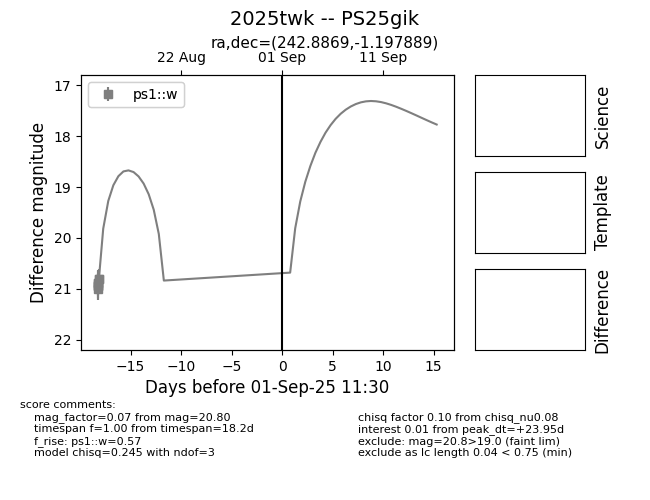

Target 2025twk at 2025-08-27 18:08, see:
TNS: wis-tns.org/object/2025twk
YSE: ziggy.ucolick.org/yse/transient_detail/2025twk
alt names
2025twk (yse,tns)
PS25gik (panstarrs)
coordinates:
equatorial (ra, dec) = (242.8869,-1.19789)
galactic (l, b) = (10.8088,+34.20042)
photometry
last ps1::w=20.80
8 ps1::w detections
